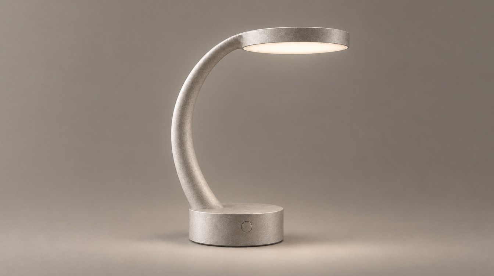
Week 04 — Offline · AI × Industrial Design
PRODUCT
EXPERIENCE
From Product Design to User Experience
좋은 제품 디자인은 형태에서 끝나지 않습니다.
사용자가 제품을 어떻게 경험하는지까지 설계해야 합니다.
PART 01 — Product Review
제품에서 경험으로
FROM PRODUCT TO EXPERIENCE
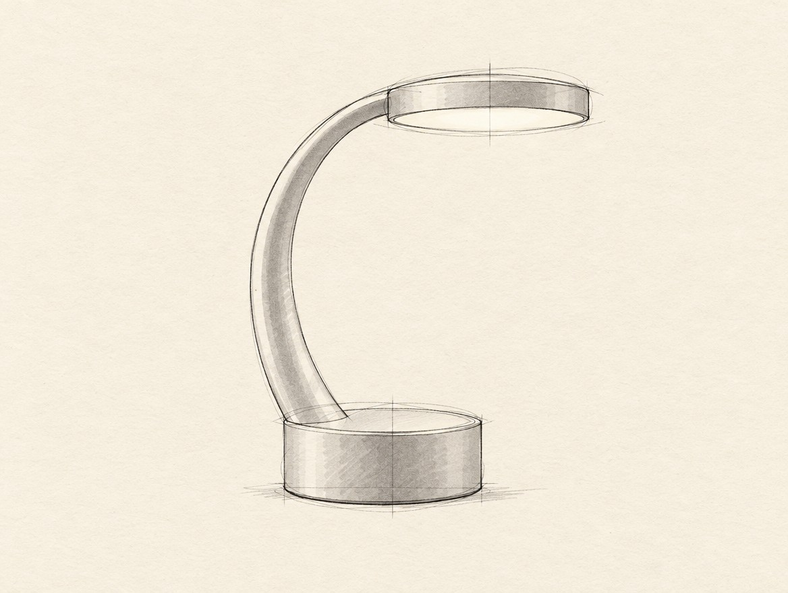
WEEK 01
IDEA → CONCEPT

WEEK 02
REVIEW → REFINE
WEEK 03
CMF → DETAIL → VISUALIZATION
TODAY
WEEK 04
USER → ACTION → EXPERIENCE
우리는 제품을 디자인했습니다.
이제 그 제품이 사용자의 일상에서 어떻게 작동하는지 보여줄 차례입니다.
2
PART 01 — Product Review
제품은 경험이 아니다
A PRODUCT IS NOT AN EXPERIENCE
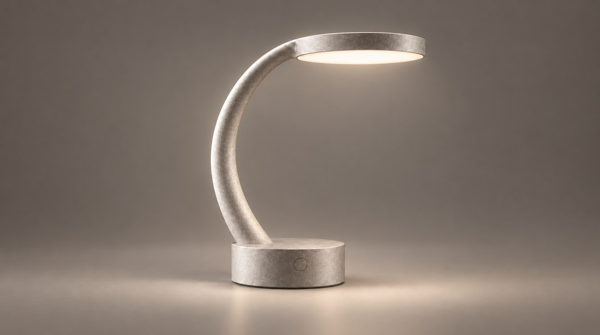
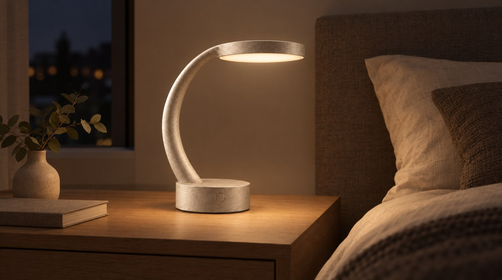
PRODUCT ONLY
형태와 CMF만 보인다
IN CONTEXT
사용 장면이 함께 보인다
외형만으로는 답하기 어려운 질문
01
누가 사용하는가?
02
언제 사용하는가?
03
어디에서 사용하는가?
04
어떤 문제를 해결하는가?
05
사용자는 어떻게 조작하는가?
06
사용 후 어떤 변화를 경험하는가?
강사 질문
"이 램프가 아름답다는 것 외에, 사용자에게 어떤 가치를 제공할까요?"
3
PART 01 — Product Review
제품이 주는 가치
PRODUCT VALUE
가치
의미
램프 예시
FUNCTIONAL VALUE
제품이 수행하는 기능
책을 읽을 수 있도록 빛을 제공
USABILITY VALUE
사용자가 쉽게 사용할 수 있는가
쉽게 조명을 켜고 끌 수 있음
EMOTIONAL VALUE
사용 중 느끼는 분위기와 감정
편안하고 차분한 분위기
CONTEXTUAL VALUE
사용 환경에 얼마나 적합한가
개인 책상과 침실에 어울림
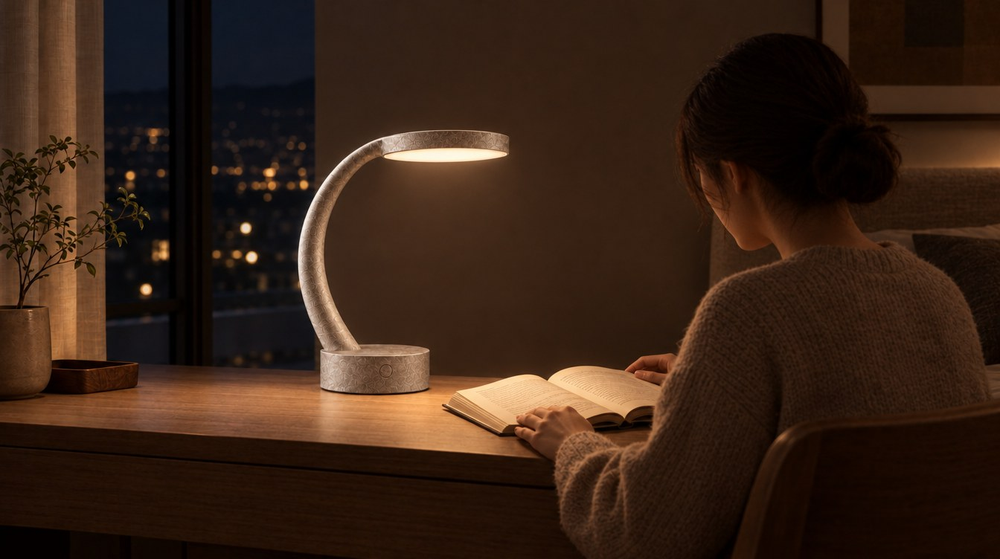
제품의 가치는 외형뿐 아니라 사용자가 얻는 경험과 연결됩니다.
4
PART 01 — Product Review
사용자가 경험할 것을 먼저 정한다
WHAT SHOULD THE USER EXPERIENCE?
EXPERIENCE STATEMENT · 예시
"A calm personal lighting experience for evening reading."
TARGET USER
누가
USE CONTEXT
어디서 · 언제
MAIN ACTION
무엇을 하는가
DESIRED EXPERIENCE
어떤 경험을 얻는가
좋은 사용 경험은 우연히 만들어지지 않습니다.
무엇을 경험하게 할 것인지 먼저 결정해야 합니다.
5
Practice 01
Product Experience Review
제품이 누구에게, 어떤 상황에서, 어떤 경험을 주는지 정리합니다.
작성 절차
1. 3주차 최종 제품 이미지 확인
2. 제품의 핵심 기능 정리
3. 주요 사용자 정의
4. 대표 사용 환경 선정
5. 핵심 경험 한 문장 작성
제출물
Product Experience Statement
완료 기준
제품이 누구에게 어떤 상황에서
어떤 경험을 제공하는지
설명할 수 있어야 합니다.
6
PART 02 — User Scenario
사용 상황을 설계한다
DESIGN THE CONTEXT
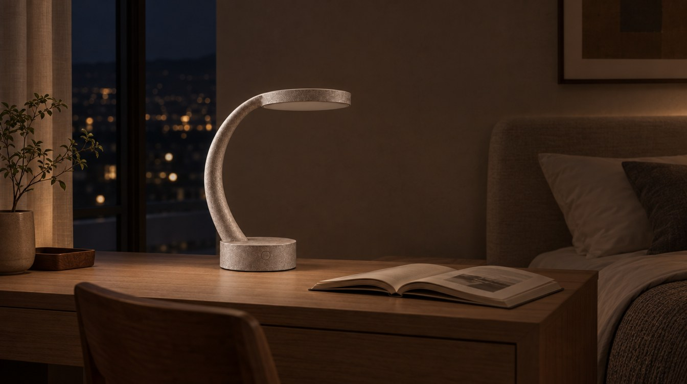
WHO
누가 사용하는가
WHERE
어디에서 사용하는가
WHEN
언제 사용하는가
WHY
왜 사용하는가
WHAT
무엇을 하는가
제품의 사용 경험은 특정한 상황에서 발생합니다.
7
PART 02 — User Scenario
다섯 질문으로 시나리오를 세운다
WHO · WHERE · WHEN · WHY · WHAT
WHO
저녁에 독서하는 사용자
WHERE
개인 침실의 책상
WHEN
늦은 저녁
WHY
주변을 방해하지 않고 책을 읽기 위해
WHAT
램프를 켜고 책을 읽는다
사용 시나리오는 추상적인 분위기 설명이 아니라 실제 행동을 설명해야 합니다.
8
PART 02 — User Scenario
경험에는 순서가 있다
EXPERIENCE HAS A SEQUENCE
BEFORE
책상에 앉아 책을 읽으려는 사용자
DURING
램프를 켜고 책을 읽음
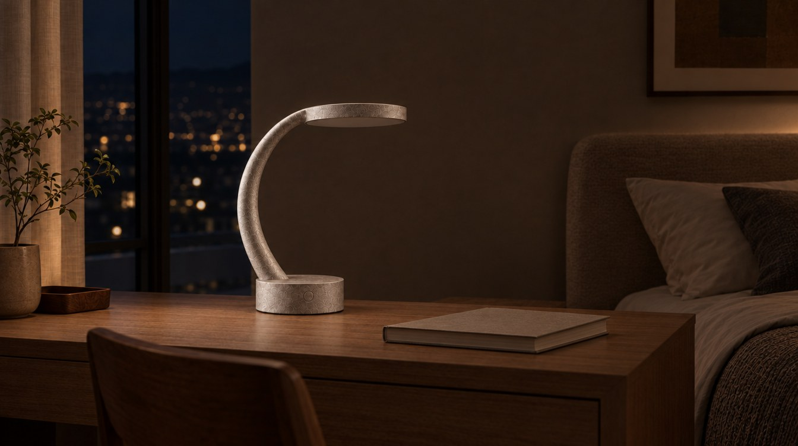
AFTER
편안한 조명 아래에서 독서에 집중
BEFORE
제품을 사용하기 전 상황
DURING
제품과 상호작용하는 순간
AFTER
제품 사용 후의 상태와 경험
9
PART 02 — User Scenario
왜 이 제품이 필요한가
WHY DOES THE USER NEED IT?
PROBLEM SCENE
조명이 충분하지 않은 책상
좋지 않은 예시
"사용자가 멋진 램프를 사용한다."
개선된 예시
"늦은 저녁 책을 읽고 싶지만
주변 공간 전체를 밝히고 싶지는 않다."
사용 상황과 문제를 이해해야 제품의 역할이 명확해집니다.
10
PART 02 — User Scenario
사용 후 무엇이 달라지는가
WHAT CHANGES AFTER USE?
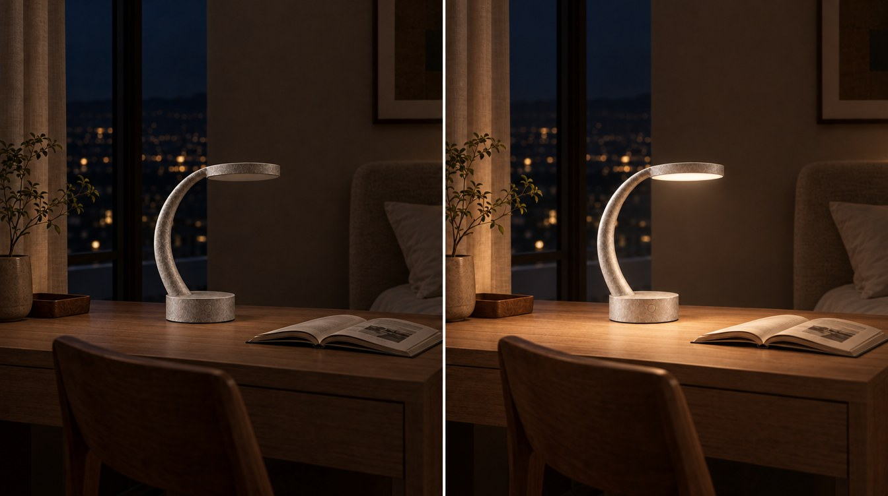
BEFORE · 독서하기에 불편한 조명 환경
AFTER · 책을 읽기에 적합한 개인 조명 환경
강사 질문
"이 제품을 사용한 후 사용자의 상황은 어떻게 달라지나요?"
11
PART 02 — User Scenario
상황을 이야기로 엮는다
FROM CONTEXT TO STORY
01
사용자 소개
02
사용 상황
03
문제 또는 목적
04
제품과의 상호작용
05
사용 후 경험
램프 예시 시나리오
"늦은 저녁, 사용자는 침실 책상에서 책을 읽으려 한다. 주변을 밝히지 않으면서 독서에 집중하기 위해 책상 위 램프를 켠다. 부드러운 조명이 책을 비추고, 사용자는 편안하게 독서를 이어간다."
영상은 시나리오를 시각적으로 전달하는 수단입니다.
12
Practice 02
User Scenario
사용자가 어떤 상황에서 제품을 쓰고 무엇을 얻는지 씁니다.
작성 절차
1. 사용자 정의
2. 사용 환경 정의
3. 사용 목적 작성
4. Before / During / After 구성
5. 3~5문장으로 사용 시나리오 작성
제출물
User Scenario Sheet
완료 기준
사용자가 어떤 상황에서 제품을 사용하고
어떤 경험을 얻는지 명확해야 합니다.
13
PART 03 — Interaction Design
경험은 행동으로 이루어진다
EXPERIENCE IS ACTION
01
USER ACTION
사용자가 수행하는 행동
램프 예시
사용자가 전원을 조작한다
→
02
PRODUCT RESPONSE
제품이 반응하는 방식
램프 예시
조명이 켜진다
→
03
USER FEEDBACK
사용자가 인식하는 결과
램프 예시
사용자가 빛을 확인한다
사용 경험은 사용자와 제품 사이의 상호작용으로 이루어집니다.
14
PART 03 — Interaction Design
행동을 순서대로 적는다
MAP THE ACTIONS
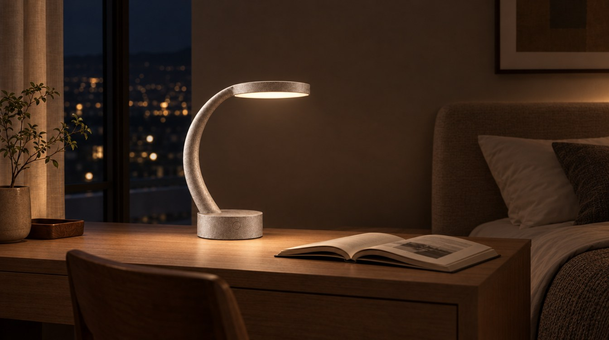
01 APPROACH
제품에 접근
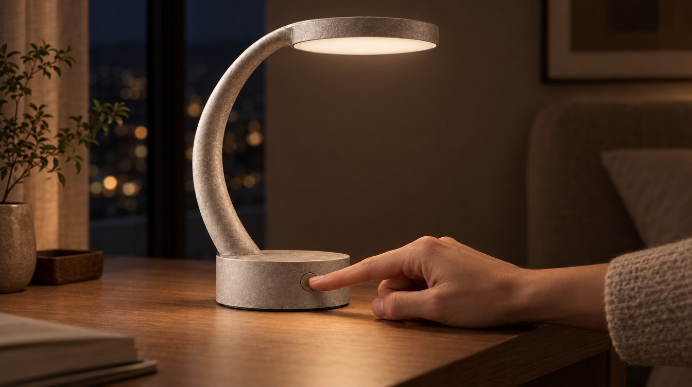
02 INTERACT
제품 조작
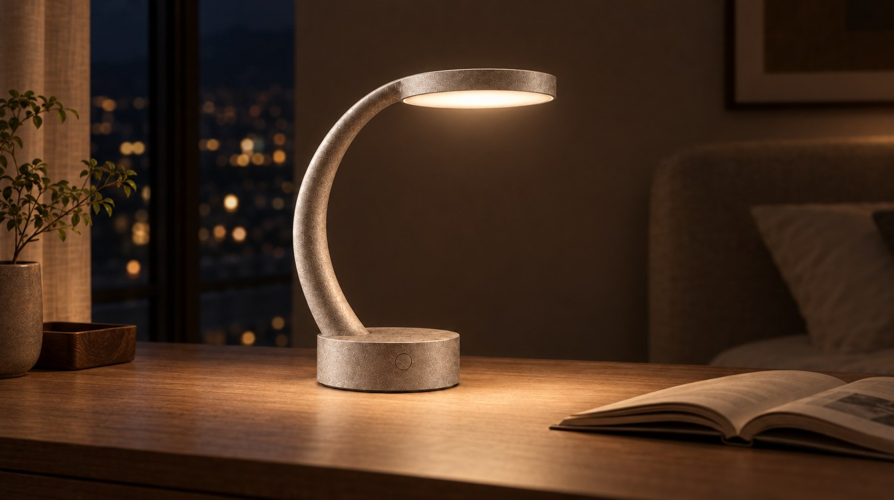
03 ACTIVATE
제품 작동
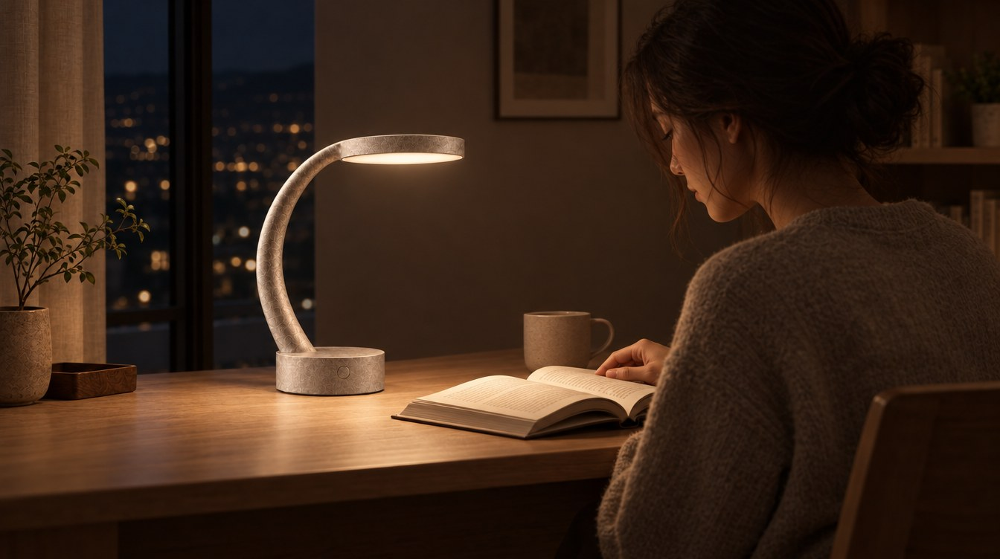
04 USE
제품 사용
05 FINISH
사용 종료
다섯 장면은 같은 책상, 같은 램프에서 만든 하나의 흐름입니다.
학생은 자기 제품의 행동을 3~5단계로 같은 형식에 적습니다.
15
PART 03 — Interaction Design
행동 · 반응 · 피드백을 표로 정리한다
DESIGN THE INTERACTION
단계
사용자 행동
제품 반응
사용자 피드백
01
램프에 접근
변화 없음
제품 위치 인지
02
전원 조작
점등 시작
빛 변화 확인
03
책을 펼침
조명 유지
독서 환경 확보
04
독서 진행
조명 유지
편안한 사용 경험
05
전원 종료
소등
사용 종료 인지
주의
전원 조작 방식은 3주차에서 실제 설계한 내용을 기준으로 합니다. 설계하지 않았다면 "미정"으로 남깁니다.
16
PART 03 — Interaction Design
중요한 행동만 보여준다
SHOW THE IMPORTANT ACTION
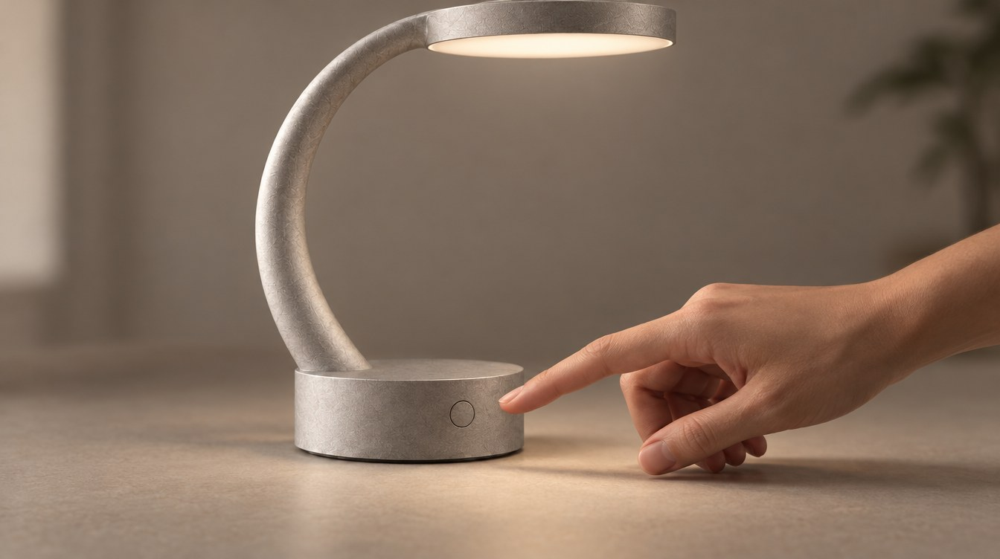
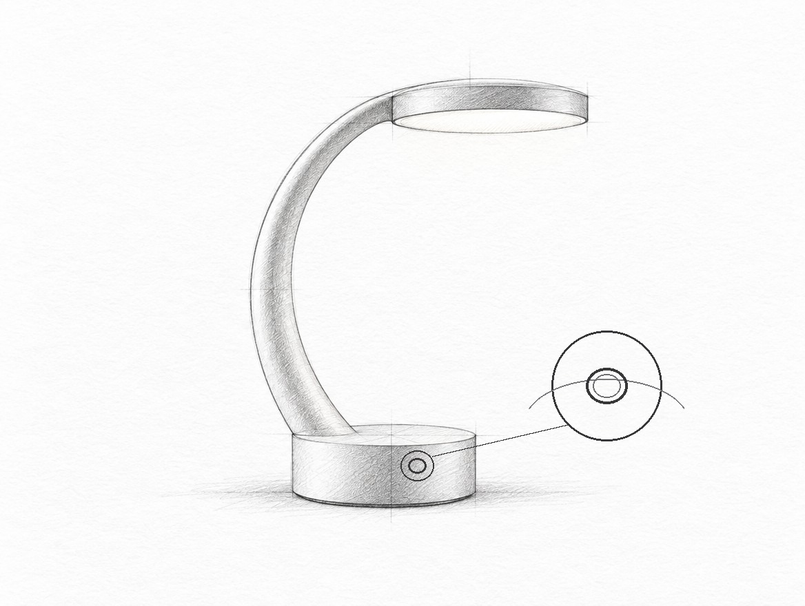
3주차 조작부 스케치
조작 위치의 기준
램프에서 보여줄 핵심 행동
01
손이 제품에 접근
02
전원 조작
03
조명 점등
04
독서 환경 변화
모든 행동을 보여줄 필요는 없습니다. 핵심 행동을 보여주면 긴 설명 없이도 사용 방식을 전달할 수 있습니다.
17
PART 03 — Interaction Design
카메라가 행동을 이해시키는가
CAN THE VIEWER UNDERSTAND THE ACTION?
01
손의 위치
02
조작부가 보이는 시점
03
제품과 사용자의 거리
04
행동 전후의 변화
05
불필요한 요소의 제거
강사 질문
"이 장면을 처음 보는 사람도 제품을 어떻게 사용하는지 이해할 수 있을까요?"
18
PART 03 — Interaction Design
핵심 순간을 고른다
FIND THE KEY INTERACTION
→
KEY MOMENT
사용자가 전원을 조작하고 조명이 켜지는 순간
선정 기준
01
제품의 핵심 기능을 보여주는가?
02
사용자 행동이 명확한가?
03
제품의 반응이 시각적으로 드러나는가?
04
짧은 영상에서도 이해할 수 있는가?
19
Practice 03
Interaction Mapping
사용자 행동과 제품 반응을 연결합니다.
작성 절차
1. 사용자 행동 3~5단계 작성
2. 각 단계의 제품 반응 정리
3. 사용자 피드백 작성
4. 핵심 행동 1개 선정
5. 핵심 행동을 보여줄 카메라 시점 결정
제출물
User Action Sequence
완료 기준
사용자 행동과 제품 반응이
명확하게 연결되어야 합니다.
20
PART 04 — Storyboard Design
경험을 장면으로 바꾼다
TURN THE EXPERIENCE INTO SCENES
SCENARIO · 글
늦은 저녁, 사용자는 침실 책상에서 책을 읽으려 한다. 책상 위 램프를 켠다. 부드러운 조명이 책을 비추고, 사용자는 편안하게 독서를 이어간다.
→
STORYBOARD · 장면
시나리오는 경험을 글로 설명하고, 스토리보드는 그 경험을 시각적으로 구성합니다.
영상 제작 전에 어떤 장면이 필요한지 결정해야 합니다.
21
PART 04 — Storyboard Design
스토리보드는 영상의 설계도다
STORYBOARD
1
2
3
4
5
6
각 컷에 포함할 정보
01
장면의 목적
02
제품과 사용자의 위치
03
카메라 시점
04
주요 행동
05
제품의 상태
06
다음 컷과의 연결
스토리보드는 영상의 장면을 미리 계획하는 도구입니다.
22
PART 04 — Storyboard Design
여섯 컷, 하나의 경험
SIX SHOTS, ONE EXPERIENCE
01
CONTEXT
사용 환경 소개
02
PRODUCT
제품 등장
03
INTERACTION
사용자 조작
04
RESPONSE
조명 점등
05
EXPERIENCE
독서 장면
06
HERO
제품의 최종 대표 장면
각 컷은 서로 다른 목적을 가져야 합니다.
23
PART 04 — Storyboard Design
SHOT 01 · 사용 환경
ESTABLISH THE CONTEXT
01
공간
02
시간
03
사용자 상황
04
제품이 필요한 이유
램프 예시
늦은 저녁, 조용한 침실의 책상
24
PART 04 — Storyboard Design
SHOT 02 · 제품 등장
INTRODUCE THE PRODUCT
01
제품 전체 실루엣
02
주요 디자인 특징
03
사용 환경과의 관계
25
PART 04 — Storyboard Design
SHOT 03 · 사용자 조작
SHOW THE ACTION
01
손의 접근
02
조작부의 위치
03
제품과 손의 관계
램프 예시
베이스 정면의 평평한 원형 버튼을 누름
26
PART 04 — Storyboard Design
SHOT 04 · 제품 반응
SHOW THE RESPONSE
01
조명이 켜짐
02
빛이 책상에 퍼짐
03
행동과 반응의 연결
램프 예시
전원 조작 후 조명이 켜짐
사용자의 행동과 제품의 반응이 명확하게 연결되어야 합니다.
27
PART 04 — Storyboard Design
SHOT 05 · 사용 경험
SHOW THE BENEFIT
01
사용자가 얻는 경험
02
제품과 사용자의 관계
03
편안한 분위기
램프 예시
따뜻한 조명 아래에서 독서하는 장면
28
PART 04 — Storyboard Design
SHOT 06 · 대표 장면
END WITH THE DESIGN
01
제품 전체 실루엣
02
핵심 형태
03
CMF
04
조명
05
최종 이미지 완성도
29
Practice 04
Storyboard
사용 경험을 5~6컷 장면으로 설계합니다.
작성 절차
1. User Scenario 확인
2. 핵심 행동 선정
3. 5~6컷 장면 구성
4. 각 컷의 목적 작성
5. 카메라 시점 지정
6. 제품 상태와 사용자 행동 표시
7. 컷별 스케치 제작
제출물
5~6컷 Product Storyboard
완료 기준
스토리보드만 보아도
사용 상황과 제품의 핵심 기능을
이해할 수 있어야 합니다.
30
PART 05 — Motion Direction
정지 이미지에서 움직임으로
FROM IMAGE TO MOTION
→
STILL IMAGE
하나의 순간
MOTION
시간에 따른 변화
영상에서 움직일 수 있는 요소
01
카메라
02
사용자
03
제품
04
조명
05
주변 환경
움직임은 장면의 목적을 전달하기 위해 사용합니다.
31
PART 05 — Motion Direction
카메라의 움직임
CAMERA MOVEMENT
PUSH-IN
PAN
ORBIT
STATIC · 고정
PUSH-IN
가까워지며 디테일 강조
조명 헤드 디테일
PAN
좌우 이동
책상 환경에서 제품 소개
ORBIT
주위를 돌며 형태 표현
C자형 지지대의 곡률 강조
STATIC
고정해 행동과 변화 강조
조명 점등 장면
32
PART 05 — Motion Direction
실제로 움직이는 것은 무엇인가
WHAT ACTUALLY MOVES?
움직임
의미
램프 예시
CAMERA MOVEMENT
카메라가 움직이고 제품은 정지
제품은 정지해 있고 카메라가 접근한다
PRODUCT MOVEMENT
제품 자체의 위치나 형태가 변화
— (이 램프에는 움직이는 기능이 없음)
USER MOVEMENT
사용자가 제품을 조작
사용자가 전원을 조작한다
STATE CHANGE
제품의 상태가 변화
램프가 켜진다
제품의 실제 기능에 없는 움직임을 임의로 추가하지 않습니다.
33
PART 05 — Motion Direction
컷마다 움직임을 기록한다
MOTION DIRECTION SHEET
기록할 항목
01
Shot Number
02
Shot Purpose
03
Camera Angle
04
Camera Movement
05
User Action
06
Product Response
07
Duration
08
Design Constraints
SHOT
04
Purpose
조명 점등 표현
Camera
Static Close-up
Action
전원 조작 후 점등
Duration
약 3초
Constraint
제품 형태 유지
램프 예시 · SHOT 04
34
PART 05 — Motion Direction
영상에서도 같은 제품을 유지한다
KEEP THE PRODUCT CONSISTENT
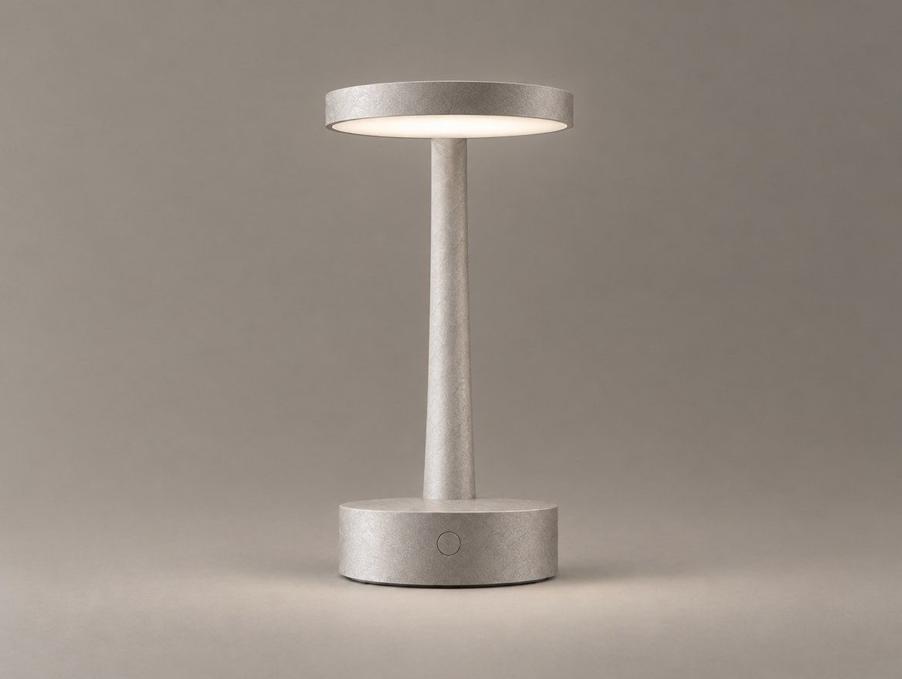
FRONT
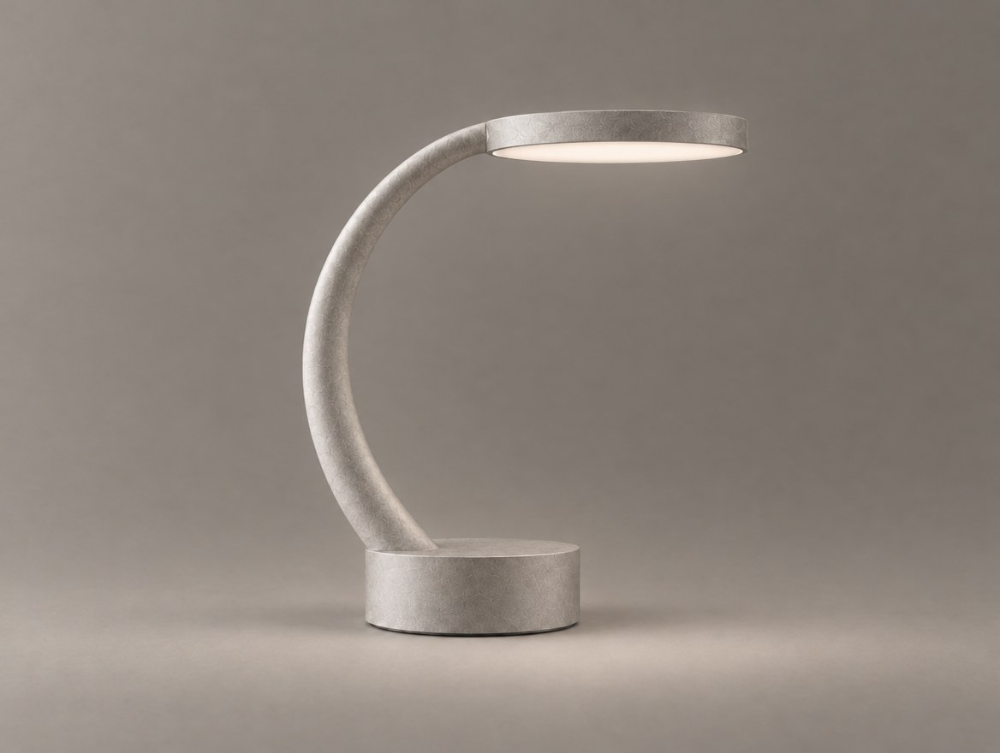
SIDE
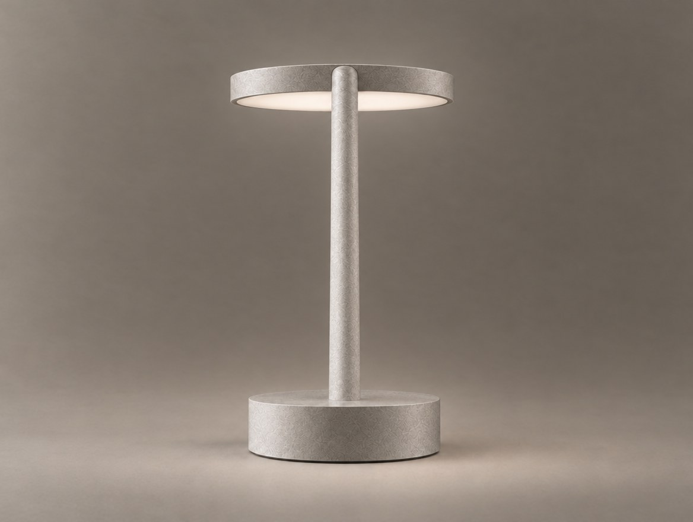
REAR
3주차 Multi-view — 영상 컷의 형태 기준
AI 영상에서 생길 수 있는 문제
01
지지대 곡률 변형
02
헤드 두께 변화
03
베이스 비율 변화
04
버튼 위치 변경
05
제품에 없는 부품 생성
06
손과 제품의 부자연스러운 상호작용
설계 단계에서 고려할 사항
01
복잡한 움직임을 피한다
02
중요한 행동은 명확하게 보여준다
03
필요한 경우 컷을 나눈다
04
형태가 잘 보이는 시점을 선택한다
05
기존 Multi-view 자료를 참고한다
영상의 화려함보다 디자인의 정확성과 전달력이 중요합니다.
35
Practice 05
Motion Planning
다음 온라인 수업에서 바로 만들 수 있도록 컷별 움직임을 정합니다.
작성 절차
1. 스토리보드 5~6컷 확인
2. 각 컷의 카메라 움직임 지정
3. 사용자 행동과 제품 반응 정리
4. 컷별 예상 길이 설정
5. 제품 유지 조건 작성
6. 복잡한 움직임이 있는 컷 수정
제출물
Motion Direction Sheet
완료 기준
다음 온라인 수업에서
각 컷을 어떤 이미지와 영상으로
제작할지 명확해야 합니다.
36
PART 06 — Final Review & Assignment
최종 제출물
DOCUMENT THE EXPERIENCE
01 FINAL PRODUCT
02 EXPERIENCE STATEMENT
"저녁 독서를 위한 차분한 개인 조명 경험"
03 USER SCENARIO
WHO 저녁에 독서하는 사용자
WHERE 침실 책상 · WHEN 늦은 저녁
04 USER ACTION SEQUENCE
05 STORYBOARD
06 MOTION DIRECTION
SHOT 01 Pan · 4초
SHOT 02 Static · 3초
SHOT 03 Static Close-up · 2초
SHOT 04 Static · 3초
SHOT 05 Push-in · 4초
SHOT 06 Orbit (짧게) · 3초
07 DESIGN CONSTRAINTS
· C자형 지지대 곡률
· 원통형 베이스 비율
· 얇은 수평 원형 헤드
· 베이스 정면 버튼 위치
· 승인된 CMF
37
PART 06 — Final Review & Assignment
이야기가 디자인을 전달하는가
DOES THE STORY COMMUNICATE THE DESIGN?
01
제품의 사용 목적이 명확한가?
02
사용자 시나리오가 현실적인가?
03
제품의 핵심 기능이 드러나는가?
04
행동과 제품 반응이 연결되는가?
05
스토리보드의 흐름이 자연스러운가?
06
모든 컷에서 같은 제품을 사용하는가?
07
영상으로 구현 가능한 움직임인가?
학생 활동
자신의 Product Experience Board를 발표하고 피드백을 받습니다.
38
PART 06 — Final Review & Assignment
영상 생성 준비
READY FOR VIDEO GENERATION
Final Product Hero Image
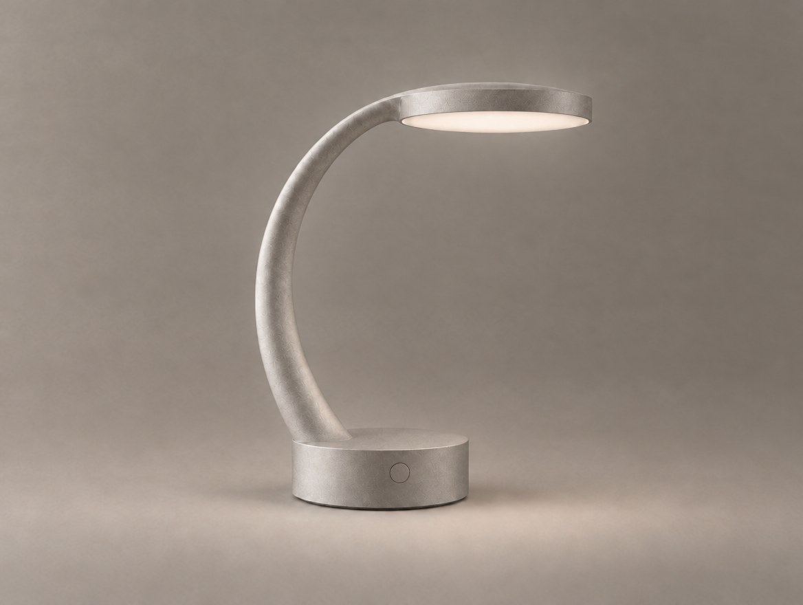
Final CMF & Detail Images
Multi-view Images
User Scenario
실습 2
Storyboard
실습 4
Motion Direction Sheet
실습 5
Design Constraints
3주차 보드 + 오늘 보드 07
다음 온라인 수업 준비물
이미지와 영상을 생성하기 전에 무엇을 보여줄지 결정해야 합니다.
39
NEXT · WEEK 04 ONLINE · 심선범 · Higgsfield
NEXT — VISUALIZE THE EXPERIENCE
01
SCENE VISUALIZATION
스토리보드 기반 장면 이미지 생성
02
IMAGE-TO-VIDEO
이미지를 움직이는 영상으로 변환
03
MOTION CONTROL
카메라 움직임과 제품 반응 제어
04
VIDEO CONSISTENCY
제품 형태와 디테일의 일관성 검토
05
PRODUCT FILM
15~30초 제품 소개 영상 제작
06
FINAL PORTFOLIO
1~4주차 과정과 결과물 정리
Design the experience.
Tell the product story.
40